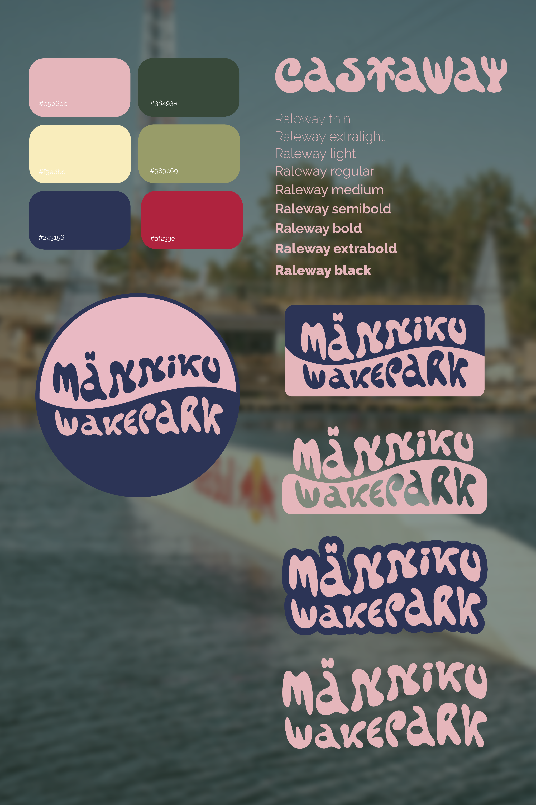
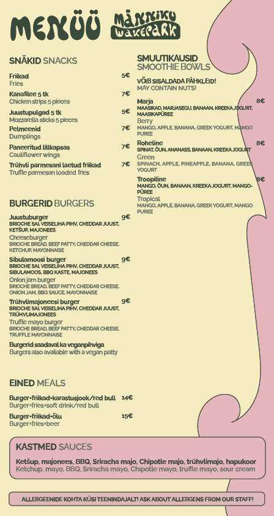
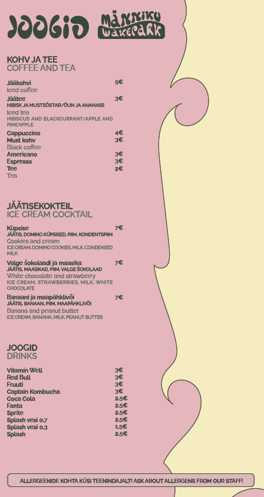
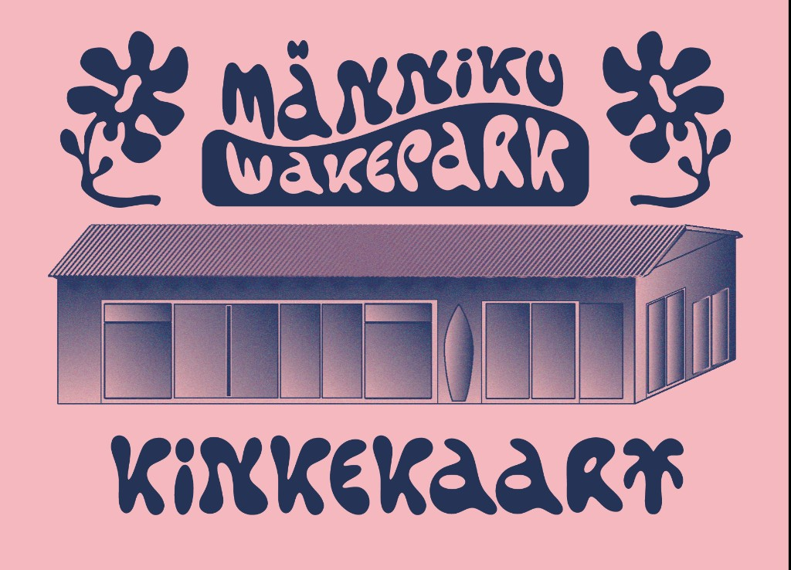
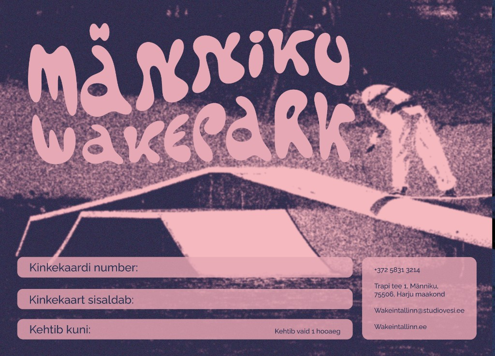
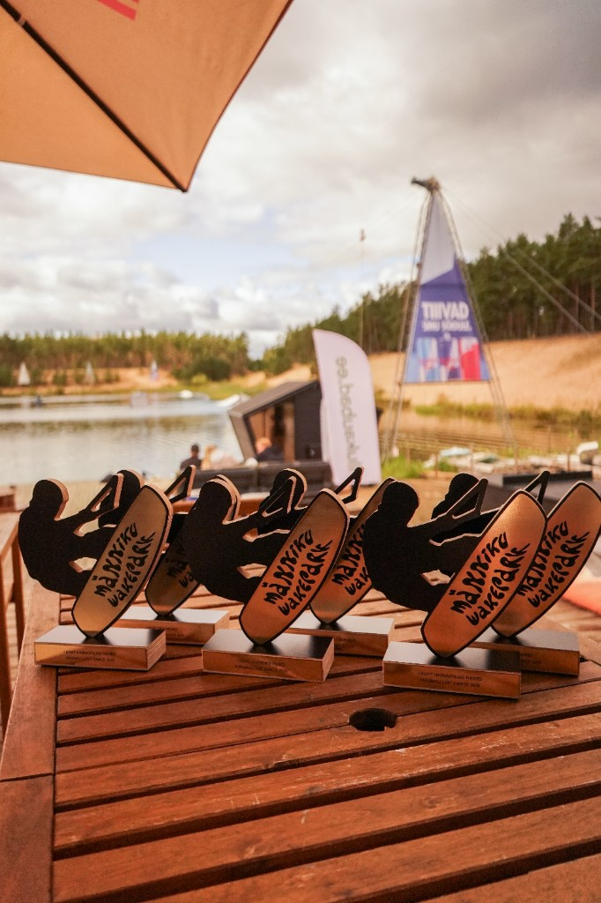
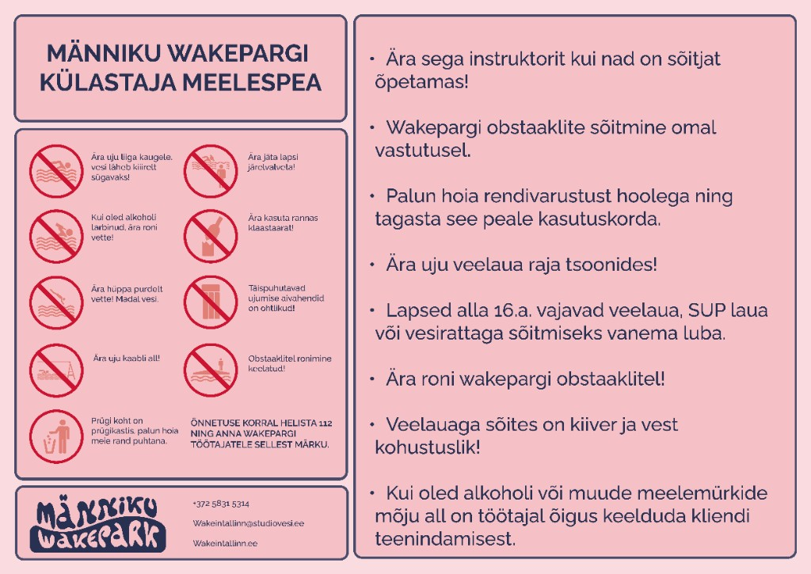

Graphic design · CVI · Männiku Wakepark · 2025-...
At the start of the 2025 wakeboarding season, Männiku Wakepark (formerly known as Nocco Wakepark) was undergoing a shift in its main sponsorship and returning to its original and most widely used name, Männiku Wakepark. This transition also called for a new visual identity that could represent the park’s renewed direction.
The colour palette was inspired by the environment of the quarry itself: the soft tones of the café interior, the deep blue-green water, warm sand, surrounding pine forests and the overall natural setting of the park. An additional influence came from the new main sponsor, Red Bull, whose core colours were integrated into the palette to create a stronger visual impact while still maintaining a connection to the location.
I was given creative freedom throughout the entire process, with the wakepark, its people and the community-driven atmosphere serving as the main sources of inspiration. The identity aims to capture the playful, energetic and welcoming spirit of the park.
For the logo, Tropical Type’s Castaway typeface was selected in collaboration with the park’s management, as it reflects the beach-like, relaxed and youthful character of the space. Five logo variations were created to ensure flexibility across different formats and applications. The wavy form of the lettering symbolises both the calm surface of the quarry and the waves created by the wakeboarding. Raleway was chosen as the supporting typeface for its clean and modern structure, creating contrast with the expressive logo while maintaining legibility across digital and printed formats.
For social media and promotional materials, dynamic wave-shaped borders and silhouettes of local riders were used. These elements highlight the movement of wakeboarding and celebrate the park’s close-knit community, making the riders themselves a central part of the visual language. The identity is designed as an evolving system and continues to develop alongside the park and its community.







